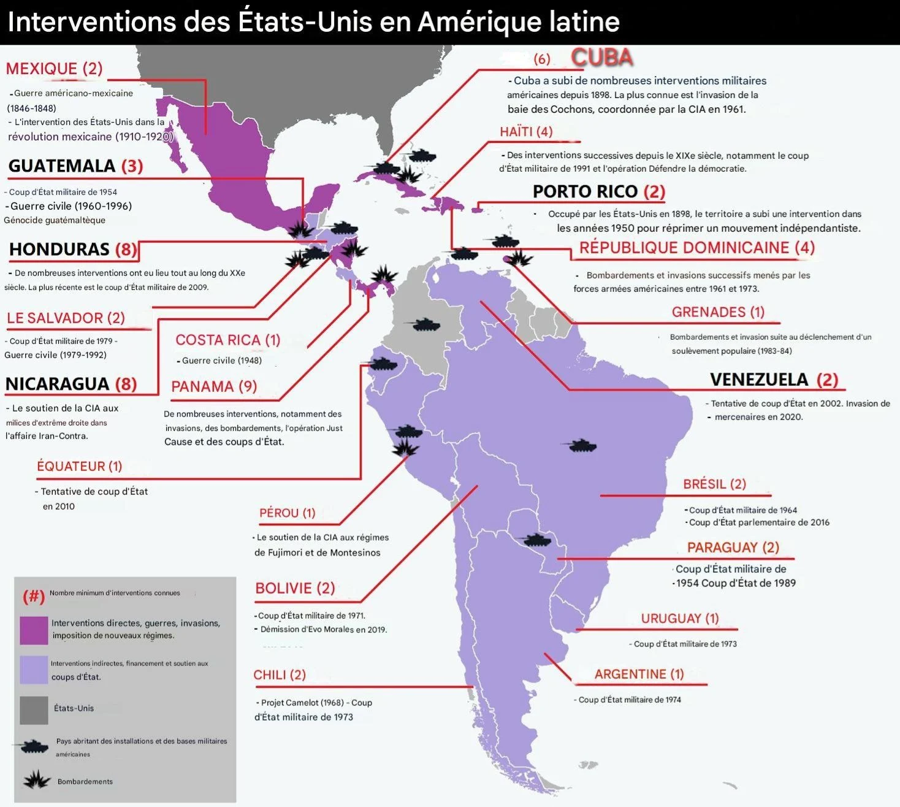

Document relayé
Une carte des interventions des États-Unis en Amérique latine
Date indiquée par Facebook · 19 décembre 2025
Repères éditoriaux
La publication partage une carte d’interventions des États-Unis en Amérique latine et dans les Caraïbes. Elle s’inscrit dans une critique de la politique américaine dans la région.
Texte conservé avec la publication
Rappel des interventions des États-Unis en Amérique latine.
Chaque président latino-américain qui a rompu avec la domination yankee a subi une intervention, un coup d'État ou a été assassiné.

Sources
Archive rouge · export Facebook · AR-0002-FB-00925
À lire aussi · L’appel « Debout l’humanité ! » relayé par le PCF 79 · Le lien d’origine